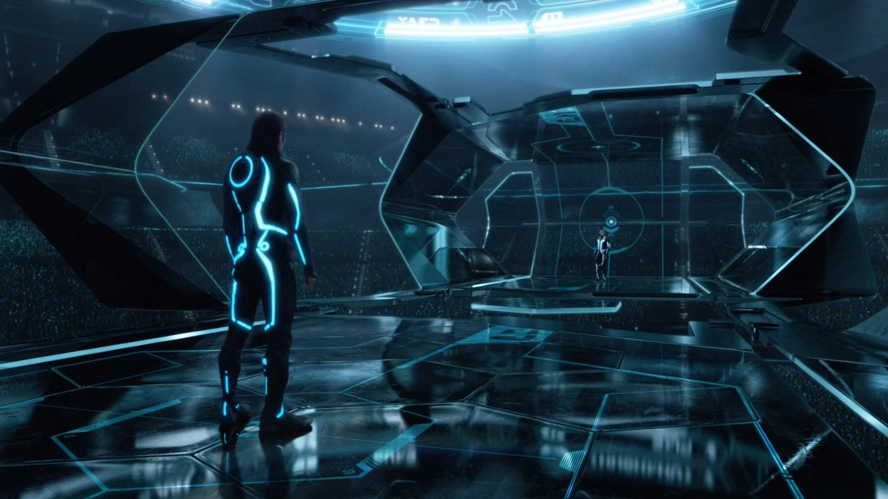
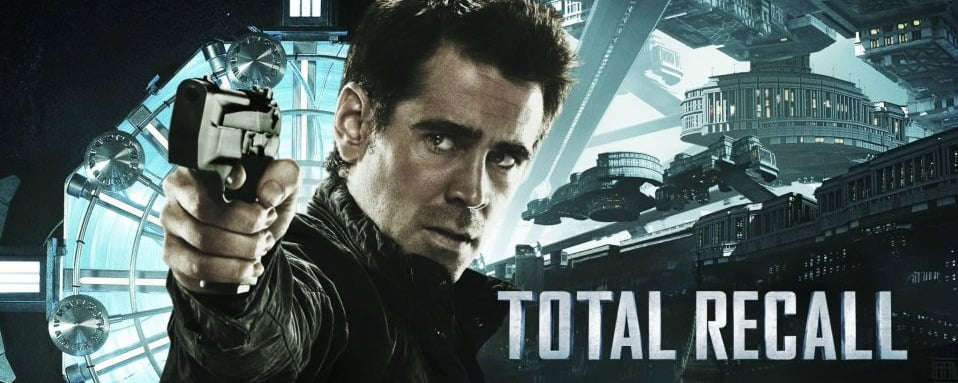

"Tron: O Legado", dirigido por Joseph Kosinski e lançado em 2010, é a aguardada sequência do clássico de ficção científica de 1982, "Tron". Combinando efeitos visuais de ponta com uma trilha sonora eletrônica envolvente, o filme traz de volta personagens icônicos e introduz novos elementos para cativar tanto os fãs antigos quanto uma nova geração de espectadores.
Menu
Gerais
Tron: O Legado
"Tron: O Legado" é uma sequência visualmente impressionante que transporta os espectadores para o mundo digital da Grade, com uma história repleta de ação e nostalgia.
Por Isaque G. S. Brandão | 07/06/2024
Apresentação
Início
A história começa com Sam Flynn (Garrett Hedlund), o filho de Kevin Flynn (Jeff Bridges), o protagonista do filme original. Kevin desapareceu misteriosamente há 20 anos, deixando para trás uma empresa de tecnologia e um filho em busca de respostas. Sam, agora adulto e um rebelde tecnológico, é atraído para o antigo fliperama de seu pai, onde descobre um segredo que o transporta para o mundo digital conhecido como a Grade.
Dentro da Grade, Sam se encontra em um ambiente neon pulsante e perigoso, onde programas lutam pela sobrevivência em arenas digitais. Ele é rapidamente capturado e forçado a competir em jogos de vida ou morte. Com a ajuda de Quorra (Olivia Wilde), uma guerreira habilidosa e fiel aliada de Kevin, Sam embarca em uma missão para encontrar seu pai e escapar do domínio do tirânico programa CLU, uma versão digitalizada de Kevin Flynn que se rebelou contra seu criador.
Trailer do filme
"Tron: O Legado"
Desenvolvimento
À medida que Sam navega pela Grade, ele descobre a complexidade do mundo digital e os conflitos internos que ameaçam sua própria existência. O reencontro com seu pai revela segredos profundos sobre a criação da Grade, a rebelião de CLU e a luta entre liberdade e controle dentro do universo digital. Kevin Flynn, agora um recluso sábio, oferece orientação a Sam enquanto eles planejam uma fuga audaciosa.

Fonte: Disney+
A cinematografia de Claudio Miranda captura a beleza e a frieza do mundo digital, criando uma estética futurista deslumbrante. Cada cena é repleta de detalhes brilhantes e contrastes visuais que enfatizam a natureza única da Grade. A trilha sonora do Daft Punk adiciona uma camada rítmica e pulsante à ação, tornando-se uma parte integral da experiência cinematográfica.
O desenvolvimento dos personagens é equilibrado com sequências de ação intensa e cenas introspectivas que exploram temas de identidade, legado e a relação entre criador e criação. As batalhas de discos e corridas de light cycles são espetaculares e emocionantes, proporcionando uma sensação de adrenalina e urgência.
Conclusão
"Tron: O Legado" é uma sequência que honra o espírito do filme original enquanto expande seu universo de maneiras inovadoras e visualmente impressionantes. A direção de Joseph Kosinski, combinada com as performances convincentes de Jeff Bridges, Garrett Hedlund e Olivia Wilde, cria uma narrativa envolvente que mantém o público cativado. Embora a história possa seguir alguns tropos familiares, a execução estilística e a profundidade temática tornam "Tron: O Legado" uma experiência cinematográfica memorável. É um filme que celebra a inovação tecnológica e a busca pela conexão humana em um mundo cada vez mais digitalizado.
Veja também

Sobre "Deep Web: O Show da Morte"
Um grupo de hackers é atraído para um jogo mortal na dark web, onde a única saída é sobreviver a desafios letais impostos por um sádico anfitrião.

Analisando "O Vingador do Futuro"
Um operário começa a suspeitar que é um espião após uma visita a uma empresa que implanta memórias falsas, desencadeando uma intensa perseguição em um mundo futurista.

Visão sobre "Oblivion"
Num futuro pós-apocalíptico, um técnico de drones descobre segredos chocantes sobre a Terra e seu passado, enquanto questiona sua própria identidade e missão.